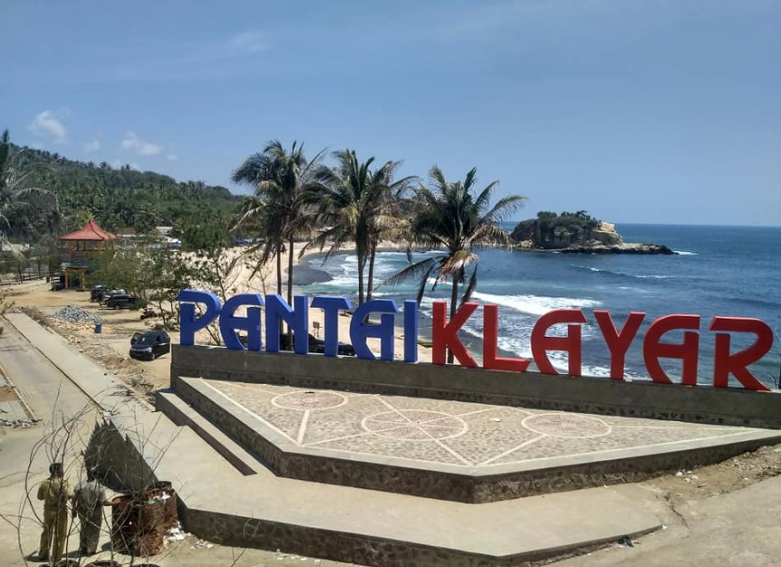
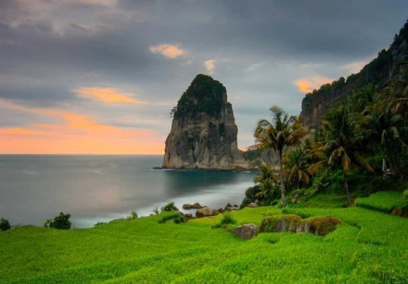
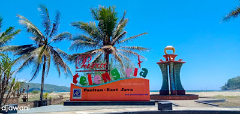
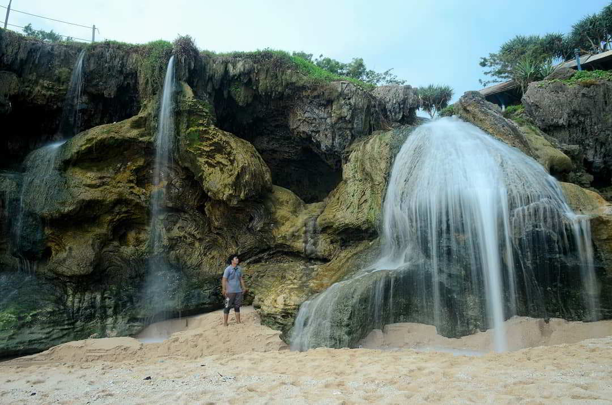
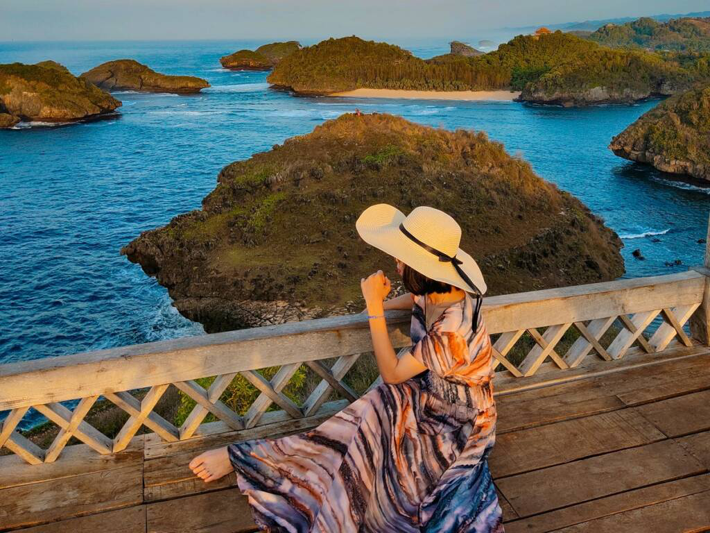
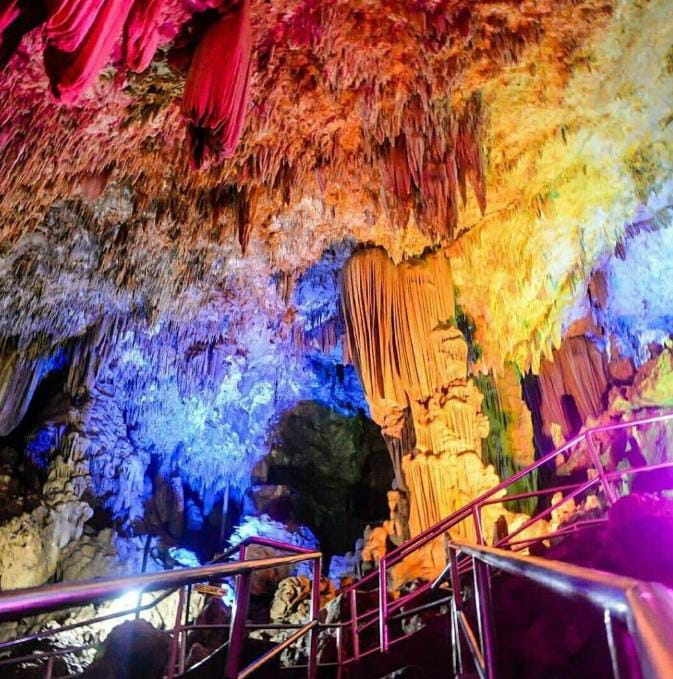
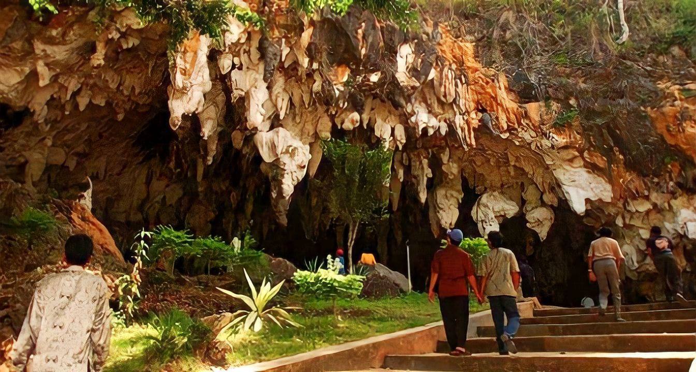
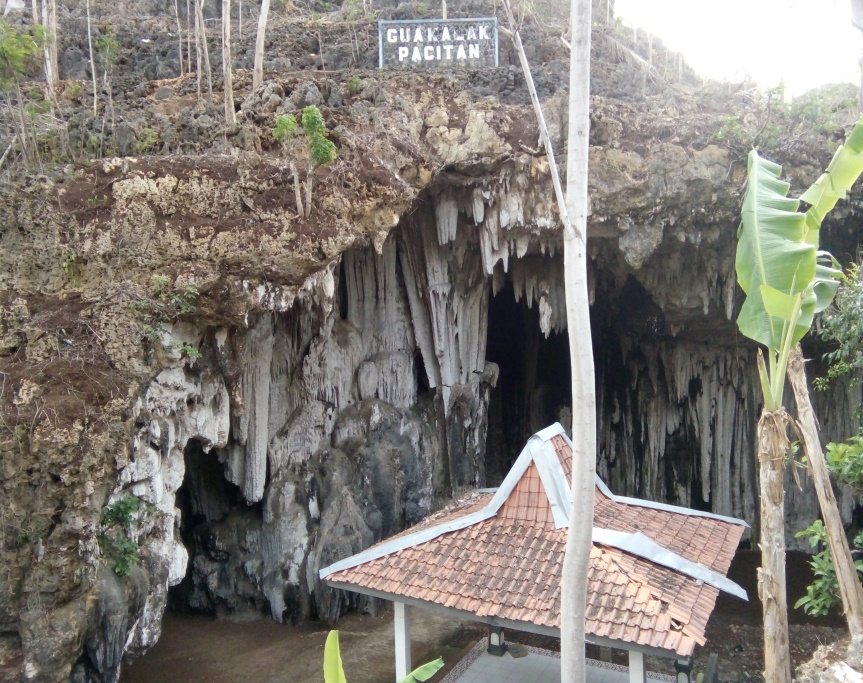
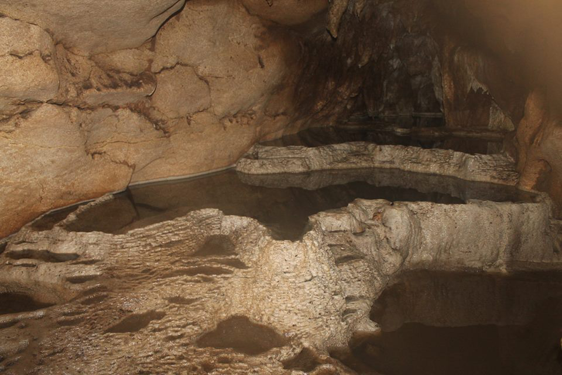
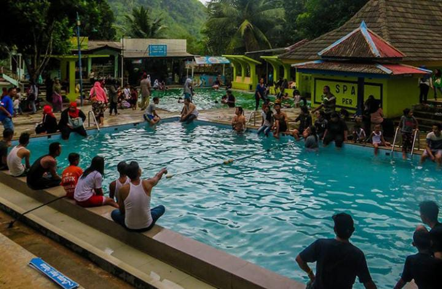

|

|
Pantai Klayar |
Pantai Klayar terletak di Pacitan, sebuah sisi selatan Jawa Timur dan berbatasan
dengan Wonogiri di Jawa Tengah tepatnya yaitu berada di Desa Sendang, Kecamatan
Donorojo, Kabupaten Pacitan sekitar 40 km ke arah barat dari Kota Pacitan. Pantai Klayar
menyimpan banyak keindahan yang unik dan juga menyimpan misteri. Keindahan yang ada
diantaranya pasir putih, karang raksasa mirip Sphinx di Mesir, Seruling Laut, Air Mancur Alami,
Air Terjun dan batu karang indah. Lebih banyak turis mancanegara yang mengenal
Pantai Klayar dibanding wisatawan domestik dikarenakan Pantai Klayar lebih
dikenal melalui internet dibadingkan melalui pemberitaan offline.
|
|  |
Pantai Pangasan |
Pantai Pangasan Pacitan merupakan sebuah tempat wisata air yang menghadirkan
pemandangan yang sangat indah, dan membuat para pengunjung terhipnotis karenanya.
Apalagi ditambah dengan hadirnya sebuah tebing batu yang cukup tinggi di sisi timur dan barat.
Tebung batu tersebut biasa disebut dengan Gunung Lanang dan Gunung Ganjuran.
Yang paling menakjubkan dari Pantai Pangasan Pacitan ini ialah todak adanya
pasir yang biasanya menghiasi bibir pantai, yang ada hanya serakan bebatuan karang dengan
ukuran yang beragam. Deburan ombaj
k yang tenang sesekali menyentuh batu karang, laut yang berwarna biru dipadukan
dengan tebing yang sangat indah merupakan mahakarya Tuhan yang sangat luar biasa. Diberi nama Pantai
Pangasan karena lokasi pantai yang satu
ini banyak sekali batu karangnya, justru hal tersebutlah yang menjadi daya tarik wisatawan untuk
mengunjungi pantai yang satu ini.
|
| 
| Pantai Telengria |
Nama Telengria sebenarnya sudah tidak asing bagi para travelers. Kawasan ini
bukanlah pantai baru seperti halnya pantai-pantai yang lainnya. Inilah oantai klasik
yang dimiliki oleh Pacitan yang namanya tidak akan pernah pudar walau banyak yang baru.
Objek wisata ini sudah menghadikna beberapa spot kekinian yang bisa di nikmati.
Seperti diving dan snorkeling. Dimana keduanya seakan mnjadi bukti akan keindahan bawah laut negri ini.
Selanjutnya adalah surfing. Bagi yang tidak bisa olahraga ekstream ini, jangan bersedih,
karena disana ada pemandu surfing. Semakin memukau lagi, pantai ini setiap tahun
sering mengadakan event surfing. Tidak main-main event ini bisa melihat aksi
memukai surfer dunia.
Bermain air ternyata tidak hanya bisa dilakukan di pantai dengan air yang asin saja.
Pihak Telengria pun sudah membuka arena wisata berupa waterpark. Jadi, saat omnak sedang
tinggi, para traveller bisa bermain air disini.
Untuk urusan selfie, kawasan ini pun sudah hadir dengan berbagai spot yang menarik
seperti pepohonan cemara yang menjulang tinggi. Menghadirkan rona yang berbeda.
Pohon cemara ini benar-benar mengesankan.
|
| 
| Pantai Banyu Tibo |
Pantai Banyu Tibo mempunyai suasana pemandangan yang berbeda. Di pantai
ini terdapat sebuah fenomena alam yang cukup unik dan jarang, yakni sebuah air
terjun yang jatuh langsung ke pantai. Fenomena dan pemandangan ini menjadi daya tarik
utama Pantai Banyu Tibo. Tentu pemandangan seperti itu tidak bisa anda jumpai
di setiap pantai, dan pantai inilah anda dapat melihatnya secara langsung.
Luas dari Pantai Banyu Tibo sendiri sebenarnya tidak terlalu luas, bahkan jika
anda datang saat air laut sedang pasang, anda hanya bisa menikmati pemandangan
dari atas tebing. Namun saat air sedang surut anda bisa dengan leluasa bermain di pantai
dengan pasir putih kecoklatan yang lembut juga merasakan segarnya air terjun dari dekat.
Bebatuan ada disekeliling pantai ini juga menambah keindahan alami yang makin
membuat jatuh cinta.
|
| 
| Pantai Kasap |
Pantai yang tak kalah menarik adalah Pantai Kasap. Pantai Kasap menjadi salah
satu obyek wisata andalan Pacitan. Pantai ini bahkan memiliki julukan sebagai Raja Ampat di Jawa Timur.
Pantai Kasap menawarkan keindahan pantai dengan pasir putih dan air biru yang jernih.
Pantai yang berada di sebelah persisi Pantai Sruni ini memiliki karakteristik
khas pantai selatan, yakni karang, pasir putih, dan ombak yang deras. Pantai ini
memiliki pemandangan yang mirip dengan salah satu pantai populer di Indonesia yaitu Piaynemo Raja Ampat.
Spot terbaik untuk menyaksikan pesona pantai ini adalah dari puncak bukit karang yang
tepat berada di sebelah barat kawasan pantai pasir putih.
Selain tawarkan panorama yang indah bagaikan Raja Ampat, Pantai Kasap
juga menghadirkan area untuk camping. Tak hanya itu, pantai ini juga memiliki
beragam fasilitas seperti toilet, musholla, dan warung makan.
|
Julukan 1001 goa untuk Pacitan bukan hanya isapan jempol, jumlah goa dikota ini ternyata sangat banyak.
Hanya saja baru segelintir yang dikembangkan sebagai obyek wisata, sedangkan sisanya masih dibiarkan saja dengan
segala kealamiannya.
Selain untuk menjaga kelestarian, goa-goa yang belum tersentuh ini memang memiliki karakteristik curam yang sulit
untuk diakses dan butuh keterampilan khusus yang ditunjang dengan peralatan lengkap untuk menjelajahinya.
Berikut wisata-wisata lain yang ada di Pacitan :
-
Goa Gong

Goa Gong terletak di Jl. Salam, Salam, Bomo, Punung, Kabupaten Pacitan, Jawa Timur yang juga terkenal dengan
julukan kota 1001 gua, dan satu yang terkenal disini adalah tempat wisata Goa Gong Pacitan.
Pacitan merupakan wilayah di Jawa Timur yang dikelilingi oleh pegunungan kapur, yang menjadikan tanah di daerah
ini kering dan tidak subur. Tanah di permukaan Pacitan memang gersang dan memiliki sedikit unsur hara, namun
anugerah Yang Maha Kuasa ternyata bukan terletak di atas permukaan, namun di bawah permukaan tanahnya.
Menurut cerita dari warga sekitar, Goa Gong ditemukan sekitar tahun 1930an. Akibat musim kemarau
berkepanjangan, yang dimana Pacitan mengalami kekeringan dan sangat sulit untuk memperoleh air.
Untuk mengatasi kondisi tersebut, 2 orang warga bernama Mbah Noyo Semito dan Mbah Joyo mencari sumber mata air
yang dapat digunakan untuk memenuhi kebutuhan mereka.
Akhirnya mereka menemukan sebuah lubang dan berinisiatif untuk menelusurinya. Dengan hanya membawa obor, mereka
masuk ke lubang ( goa ) tersebut dan menyusuri lorong-lorong yang ada di dalamnya. Lubang yang mereka masuki
ternyata sangat dalam, Mbah Noyo dan Mbah Joyo menghabiskan sebanyak tujuh obor hingga keduanya menemukan mata
air.
Setelah beristirahat dan mandi di mata air tersebut, mereka pulang sambil mengangkut air dan membawa kabar baik
untuk penduduk. Mulai saat itu, warga berbondong-bondong memanfaatkan mata air yang ada di gua tersebut.
Nama Goa Gong sendiri diambil dari misteri yang dahulu sempat menyelimuti dan menghantui masyarakat sekitar.
Masyarakat sekitar gua mengungkapkan bahwa di malam hari mereka sering mendengar suara tabuhan menyerupai suara
gong (salah satu alat musik gamelan) yang berasal dari dalam gua.
Ada juga yang mengatakan bahwa di salah satu ruangan gua terdapat batu yang apabila ditabuh akan mengeluarkan
bunyi yang menggema seperti bunyi gong.
Tetapi secara ilmiah, suara yang muncul itu ternyata dapat dijelaskan. Suara yang terdengar menyerupai bunyi
gong tersebut dihasilkan dari tetesan air yang menimpa Stalaktit atau stalakmit di gua tersebut, ditambah
dengan gema yang dipantulkan oleh formasi batuan di dalam gua sebenarnya bunyi yang dihasilkan cukup apik untuk
dinikmati.
-
Goa Tabuhan

Goa Tabuhan termasuk wisata alam di Pacitan unggulan, bahkan populernya mengikuti Gong Gong. Karena mempunyai
pesona unik dapat berbunyi seperti gamelan, goa berstalagti stalagmit cantik ini mampu membuat penasaran banyak
wisatawan. Yang datang itu selain pelancong domestik, juga turis mancanegara. Pada saat hari libur nasional dan
akhir pekan, selalu ramai pengunjung.
Dikenal daerah Pacitan wilayahnya didominasi oleh perbukitan batuan kapur, lebih populer disebut Pegunungan
Sewu. Dimana salah satu kawasan karst di Pulau Jawa yang diakui dunia sebagai taman bumi, namanya Gunung Sewu
Geopark. Disanalah juga keberadaan obyek wisata Goa Tabuhan. Indahnya batuan stalagmit dan stalagtit eksotis
tersembunyi disana. Plus bisa berbunyi gamelan.
Apa sih uniknya dari Goa Tabuhan di Pacitan ini. Pertama. Jika Kamu menyukai wisata alam bertemakan geologi,
tidak ada salahnya untuk berkunjung kesini. Untuk yang senang sains pasti bersemangat. Coba dieksplor, ada apa
saja dan cari tahu bagaimana sejarahnya. Cantiknya batu-batu slatagtit dan stalagmit Goa Tabuhan ini terbentuk
jutaan tahun yang lalu. Bentuknya runcing, slatagtit di dinding langit goa, sedangkan stalagmit di lantai goa
mempesona.
Kedua. Berkaitan dengan seni musik spesifiknya karawitan. Di sekitar kawasan Goa Tabuhan sayup-sayup suara
gamelan misterius. Suara gending terdengar itu membuat penasaran. Merdunya bunyi gamelan itu ternyata berasal
dari stalagtit stalagmit Goa Tabuhan yang dipukul dengan irama tertentu oleh yang terampil. Itulah uniknya Goa
Tabuhan, bagi mereka yang baru pertama mendengar pasti terkejut heran.
Ketiga. Mengenai historis dan kultur. Ternyata pada zaman dulu lokasi Goa Tabuhan ini digunakan untuk bertapa
atau meditasi, serta dipercaya sebagai tempat petilasan Pangeran Diponegoro. Itu berarti bahwa tempat ini
memiliki atmosfir nuansa spiritual yang kental seperti halnya Goa Kalak dan Gunung Limo. Juga sekaligus tempat
bersejarah karena pernah disinggahi Pangeran Diponegoro. Bukan angker atau misteri.
-
Goa Kalak

Menurut cerita sang juru kunci bahwa presiden Soeharto pernah berkunjung ke Goa Kalak pada tahun 1972.
Kedatangan Soeharto juga dikaitkan dengan kesakralan tempat ini, sehingga menurut cerita juru kunci, presiden
Soeharto juga pernah berdoa di dalam Goa Kalak ini. Mbah Tugiman juga sempat menunjukkan tempat/lokasi dimana
Presiden Soeharto pernah berdoa didalam Goa tersebut.
Selanjutnya mbah Tugiman menjelaskan bahwa cerita terkait Misteri Angker Goa Kalak Pacitan pernah dijadikan
tempat ritual oleh Raden Brawijaya dari Kerajaan Majapahit adalah cerita turun temurun yang beliau sendiri juga
belum bisa menjamin kebenarannya. Beliau hanya melestarikan cerita tentang hal ini dari nenek atau juru kunci
sebelumnya.
Banyak yang mengatakan bahwa Goa Kalak ini menjadi salah satu Goa yang angker atau wingit di Pacitan. Namun
demikian mbah Tugiman mengatakan, meskipun tempat ini dikatakan angker tetapi setiap orang tetap boleh dan bisa
masuk asal orang tersebut tidak takut dan berani masuk dan yang paling penting tidak mengganggu dan merusak
lingkungan Goa baik didalam maupun diluar Goa.
Harimau Hitam dan Macan Tutul
Dua harimau yang diceritan ini adalah asli binatang bukan jelmaan atau penunggu dari Misteri Goa Kalak Pacitan
ini. Namun hingga saat ini yang pernah muncul tinggal harimau hitam, itupun tidak sering seperti dulu. Untuk
macan Tutul sudah sangat lama tidak terlihat.
-
Goa Dawung

Goa Dawung, yang terletak di hutan Dawung, Desa Piton, Kecamatan Punung. Keberadaan Goa Dawung ini lebih dekat
dengan Goa Tabuhan, kurang lebih 3 Km dari Goa legendaries di Donorojo tersebut.
Namun demikian, untuk masuk ke Goa ini membutuhkan perjuangan ekstra, sebab selain belum ada penerangan
mandiri, jalannya masih berupa tanah liat hasil swadaya masyarakat setempat. Dan hingga berita ini diturunkan,
masih terus dilakukan pengerjaan jalan menuju goa maupun perapian jalur turun dari goa. Untuk masuk ke dalam
goa pun anda harus lebih dahulu menghubungi warga setempat, yakni Pak Pardi, sebab dari rumah Pak Pardi inilah
penerangan goa dialirkan.
Setelah masuk dengan cukup tenaga ekstra, anda akan dimanjakan dengan keindahan goa Dawung Pacitan yang memang
memiliki keunikan tersendiri. Pemandangan stalagmite dan stalagtit goa, ukiran bebatuan yang menyerupai
gelambir-gelambir dan gorden raksasa, serta batuan berlian yang Nampak berbintik-bintik diantara batuan
stalagmite tersebut dijamin membuat anda terkesima.
Di dalam goa ini jug masih banyak penghuninya, salah satunya kelelawar yang memang menjadikan goa ini sebagai
tempat
tinggalnya. Goa yang baru diresmikan awal Januari tahun 2014 ini memang memiliki karakteristik yang cukup unik
dibandingkan dengan goa lainnya, yaitu keberadaan sendang yang ada di dalamnya, salah satunya sendang pitu.
Sendang ini adalah cekungan air yang membantang kurang lebih 1x2 meter yang berada diatas bebatuan goa Dawung.
Tentu karena adalah goa Karst, air sendang ini sangat dingin dan jernih.
-
Banyu Anget

Pacitan tidak hanya memiliki goa saja. Meskipun jauh dari gunung api aktif, Pacitan juga mempunyai pemandian
air panas.
Bukan hanya sekedar air hangat, sumber air pemandian ini alami dan berasal dari dalam bumi.
Masyarakat Pacitan yang ingin mandi air hangat cukup mengunjungi Pemandian Air Hangat Tirto Husodo.
Pemandian air hangat ini tepatnya berada di Desa Karangrejo, Kecamatan Arjosari, Kabupaten Pacitan, Jawa Timur.
Harga tiket untuk pemandian air hangat di Pacitan ini hanyalah Rp.10.000 saja. Pengelola telah membuat
kolam-kolam
pemandian yang airnya berasal dari sumber air panas. Sementara kolam utama suhu airnya cukup tinggi
sehingga tertutup untuk umum. Tak usah khawatir bagi yang punya anak, disana juga tersedia kolam khusus dewasa
dan kolam khusus anak.
Meskipun berasal dari air belerang, namun air tetap jernih dan tidak lengket. Tiap minggunya pun dikuras sampai
dua kali agar tetap bersih.
Keunggulan Banyu Anget, air hangatnya bisa untuk terapi kesehatan dan terapi untuk tubuh para pengunjung.
Misalnya penyakit kulit,
reumatik, stroke dan sebagainya. Tempat ini dibuka dan dikelola oleh Pemerintah Kabupaten Pacitan sudah sejak
tahun 1995
dan masuik nomor 3 di Kabupaten Pacitan, setelah Pantai Klayar dan Goa Gong.
Pemandian air hangat memiliki sejarah tersendiri, terletak dibawah bukit batu putih. Konon, dahulu kala berawal
dari
seorang dalang wayang kulit melakukan pertunjukan sampai pagi. Saat ditengah pertunjukan terdengar suara
seorang gadis menyapu, sang dalang marah, seketika itu lampu tinthir yang digunakan sebagai penerangan tumpah
, dan disitulah awal bermula air sumber Banyu Anget muncul.